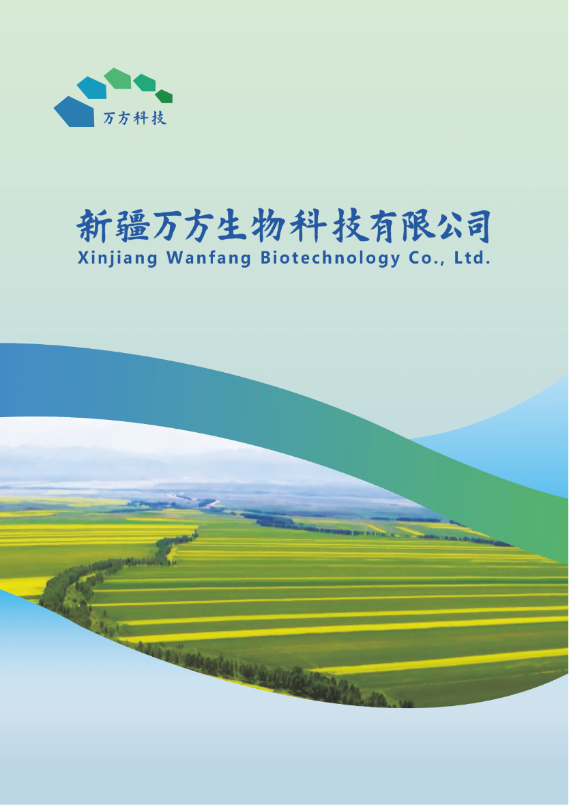
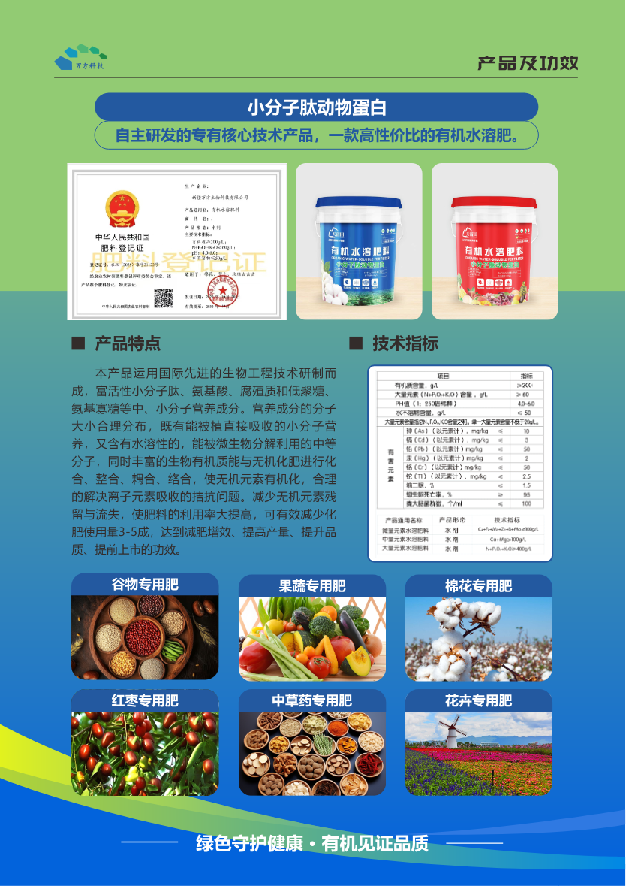
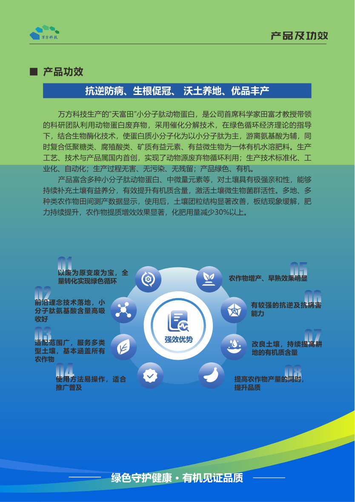
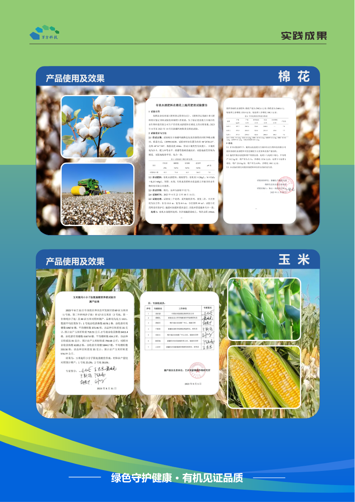

Product analysis and understanding
小分子肽动物蛋白：以废弃物资源化驱动的有机水溶肥产品
万方生物的核心产品不是单纯补充氮磷钾，而是围绕动物源小分子肽、氨基酸、中微量元素和有机质建立的功能型肥料方案。其叙事重点是绿色循环、土壤修复、抗逆防病、生根促冠、沃土养地和优品丰产。

一句话产品理解
从 PDF 看，产品的核心不是“卖肥料”，而是把动物源废弃物转化为可被作物和土壤系统吸收利用的功能营养与土壤改良投入品。
产品属性
高性价比有机水溶肥，核心成分为小分子肽动物蛋白，并复配氨基酸、腐殖质、低聚糖、氮磷钾及中微量元素。
技术来源
宣传中强调动物屠宰废弃物、餐厨垃圾等无害化处理与循环利用，通过催化分解和生物转化生成以小分子肽为主的功能组分。
市场角色
适合被定位为“化肥减量增效 + 土壤健康 + 作物品质提升”的解决方案，面向粮食作物、经济作物、设施果蔬和地方特色作物。
产品机制拆解
PDF 将小分子肽解释为农业“新质生产力”的载体，主要价值来自“易吸收营养 + 土壤微生态改善 + 元素协同利用”。
核心功效
手册中反复出现的卖点可以归纳为八类，既有作物端结果，也有土壤端长期价值。
作物端价值
- 抗逆防病，帮助作物应对环境胁迫。
- 生根促冠，增强根系吸收和植株生长势。
- 增产、早熟，宣传中强调对农作物增产和早熟效果明显。
- 优品丰产，提高产品品质、商品性和安全感知。
土壤端价值
- 持续补充土壤有益养分和有机质。
- 提升土壤微生物菌群活性。
- 改善板结现象，使土壤团粒结构更稳定。
- 辅助化肥减量，宣传可减少化肥使用量 3-5 成或 30% 以上。
适用作物与场景
PDF 中列出的应用场景很广，后续市场研究需要进一步判断哪些作物最愿意付费、复购最快、验证成本最低。
粮食作物
谷物、玉米、小麦等。重点价值是稳产增产、减肥增效和大田推广。
经济作物
棉花、红枣、中草药、特色林果等。重点价值是品质提升、抗逆和地方特色产业示范。
果蔬与花卉
设施蔬菜、果树、花卉等。重点价值是商品性、品质稳定性和水肥一体化适配。
证据与背书
手册提供了试验报告、作物对比图、专家团队和研究院方向，适合作为早期可信度材料，但商业化仍需要可复核的田间数据。



Upcoming workstream
竞品与市场研究
全球范围内，与万方生物“小分子肽动物蛋白有机水溶肥”最接近的不是传统复合肥企业，而是以蛋白水解物、氨基酸、多肽和生物刺激素为核心的功能肥公司。直接竞品集中在欧洲，尤其是意大利、西班牙和瑞士/意大利跨国农化体系；中国市场则出现小分子肽、鱼蛋白和氨基酸水溶肥的本土替代品。
竞品分层判断
万方的关键词是动物源小分子肽、蛋白水解物、有机水溶肥、土壤修复和化肥减量。因此竞品需要按“技术相似度”分层，而不是只看是否叫有机肥。
第一层：直接相似
动物源蛋白水解物、胶原水解氨基酸、小分子肽/多肽肥料。这类产品最接近万方，可直接对比原料、工艺、氨基酸/肽含量、作物试验和价格。
第二层：功能替代
植物源蛋白水解物、酵母/发酵氨基酸、鱼蛋白水解物。原料不同，但同样以氨基酸、多肽和抗逆促长作为主要卖点。
第三层：相邻赛道
海藻酸、腐殖酸/黄腐酸、微生物菌剂和中高端水溶肥。它们争夺同一类预算：提质增产、土壤健康、抗逆和减肥增效。
全球相似产品清单
下表优先列出与动物源小分子肽/蛋白水解物最接近的公司和产品；市场规模多为公司或赛道层面公开数据，单品收入通常不公开。
| 相似度 | 公司/国家/网址 | 产品与描述 | 与万方对比 | 市场信息 |
|---|---|---|---|---|
| 高 | Syngenta / Valagro 瑞士/意大利 syngenta.com |
ISABION：Syngenta/Valagro 公开资料将其描述为由胶原/动物蛋白水解获得的氨基酸和肽类生物刺激素，用于促进养分吸收、帮助作物应对非生物胁迫、提升作物表现。 | 非常接近万方的“动物蛋白小分子肽”逻辑。差异在于 ISABION 更偏叶面/滴灌生物刺激素品牌化表达，万方更强调废弃物资源化、土壤修复和有机水溶肥。 | Syngenta 是全球农化龙头，Valagro 被其收购后成为生物刺激素平台之一；单品收入未披露。 |
| 高 | SICIT Group 意大利 sicitgroup.com |
SICIT 2000 / Green Hascon 等：公司以制革副产物为原料生产蛋白水解物，用于农业生物刺激素、动物营养和工业应用；农业端核心是氨基酸和肽类产品。 | 这是万方最值得研究的国际对标之一：同样把动物源副产物转为高附加值农业投入品，且循环经济叙事更成熟。 | 公司级别市场信息较多，但农业单品规模不透明。可作为“动物源副产物资源化 + 生物刺激素商业化”的标杆。 |
| 高 | Bioiberica 西班牙 bioiberica.com |
Terra-Sorb Foliar / Radicular：氨基酸生物刺激素产品线，用于提高作物抗逆、促进营养吸收和恢复生长。Bioiberica 在动物源生物分子方面有长期积累。 | 产品功能与万方高度重叠，尤其在“氨基酸/肽类促进吸收、抗逆恢复”方面。万方可学习其作物场景化和专业作物方案表达。 | 单品规模未披露。Bioiberica 属于全球较成熟的氨基酸生物刺激素玩家。 |
| 高 | Tecnobell 意大利 tecnobell.eu |
Carbion 8 / Carbion 8 TE：Tecnobell 公开产品资料中属于有机/氨基酸类产品，强调较高游离氨基酸含量；TE 版本复配微量元素，用于改善作物营养状态和生长活力。 | 功能上接近万方的“氨基酸/肽类促吸收、抗逆、营养效率”逻辑，但公开官网首页和产品资料未稳定证明其为动物源小分子肽，因此应作为氨基酸生物刺激素竞品，而非动物蛋白路线的直接对标。 | 中型专业肥料/生物刺激素企业，单品市场规模未披露。 |
| 相邻 | 山东迈科珍生物科技 / MicroGen 中国 microgenbiotech.com.cn |
土壤修复与微生物组技术：公开资料显示其业务更偏土壤修复、微生物组、盐碱地治理和高标准农田相关技术，不属于动物蛋白小分子肽肥料的直接同类。 | 与万方在“土壤修复、盐碱地改良、减肥增效”的应用目标上有重叠，但技术路线不同。建议作为土壤健康解决方案竞品/合作方观察，而不是小分子肽直接竞品。 | 公司规模和收入未公开。公开企业介绍称其技术在 20 多个省进行过 100 余次实地验证，并涉及重金属降低、增产和减少化肥使用量等指标；更适合作为项目型土壤修复竞品观察。 |
| 中高 | Tradecorp / Rovensa Next 西班牙 rovensanext.com |
Delfan Plus：Tradecorp/Rovensa 公开资料将其描述为含 L-alpha 游离氨基酸的生物刺激素，常用于逆境恢复、营养吸收、作物活力和品质提升。 | 功能相近，但公开主页不能稳定确认其为动物源小分子肽。适合作为高端氨基酸生物刺激素竞品，重点对比游离氨基酸含量、施用量、作物场景和价格带。 | Rovensa Next 是全球生物解决方案平台，覆盖生物刺激素、生物防治和特种营养等品类；Delfan Plus 单品规模未披露。 |
| 中高 | Hello Nature 意大利 hello-nature.com |
Trainer：植物源蛋白水解物生物刺激素，强调氨基酸、多肽、作物抗逆、营养效率和产量品质。 | 原料路线不同，是植物源而非动物源，但与万方争夺同一类“肽/氨基酸生物刺激素”预算。其优势是植物源标签更容易进入部分有机农业叙事。 | 单品规模未公开。Hello Nature 是欧洲蛋白水解物生物刺激素代表企业之一。 |
| 中高 | Biolchim 意大利 biolchim.com |
Fylloton / AminoQuelant 等：氨基酸、肽类和微量元素络合相关产品线，用于提升营养利用率、抗逆和品质。 | 功能高度重叠，尤其是“氨基酸 + 微量元素络合”的产品逻辑。万方可借鉴其按作物、物候期和营养问题组织产品组合。 | 专业生物刺激素与特种肥企业，现属 JM Huber 旗下平台，单品规模未公开。 |
| 中 | Dramm Corporation 美国 dramm.com |
Drammatic 系列：鱼水解物/鱼蛋白液体肥料，常用于有机种植、土壤微生物活性和作物营养补充。 | 鱼蛋白属于动物源蛋白路线，但通常更偏有机液体肥和微生物食物来源；与万方的“小分子肽动物蛋白 + 减肥增效”存在部分重叠。 | 单品规模未公开。美国有机种植和园艺渠道中鱼蛋白肥较常见。 |
| 中 | Valagro / Syngenta 意大利/瑞士 syngenta.com |
Megafol：Valagro 代表性复合型生物刺激素，公开资料强调植物源提取物、氨基酸、维生素、甜菜碱等，用于非生物胁迫管理和恢复生长。 | 不是动物蛋白路线，但在抗逆恢复、提高作物活力和高端生物刺激素渠道上与万方竞争。更适合作为“国际高端生物刺激素品牌打法”参考。 | Valagro 已并入 Syngenta 生物刺激素平台；具体单品规模不公开。 |
市场格局分析
全球竞品显示，万方所在赛道应被定义为“蛋白水解物/氨基酸/肽类生物刺激素 + 有机水溶肥”，而不只是普通有机肥。
欧洲是高端对标区
意大利、西班牙企业在蛋白水解物生物刺激素上布局成熟，产品命名、作物方案、试验报告和国际登记经验都更完整。万方若做高端化，应重点研究 ISABION、SICIT、Terra-Sorb、Trainer 等。
中国市场存在概念机会
国内已有小分子肽、鱼蛋白、氨基酸水溶肥等产品，但“动物源废弃物资源化 + 小分子肽 + 土壤修复 + 减肥增效”的完整叙事并不拥挤。万方可以通过新疆场景和研究院背书形成差异。
竞品核心卖点趋同
大多数相似产品都在讲抗逆、促根、提质、增产、营养吸收和作物恢复。单靠“小分子肽”概念不够，必须用作物数据证明单位投入产出比。
最大验证缺口是 ROI
公开竞品资料很少直接披露亩成本、增收、减肥比例和复购率。万方若能拿出棉花、玉米、小麦、果蔬和红枣的标准化试验数据，会比泛泛宣传更有销售穿透力。
对万方的启示
竞品研究的结论不是“市场空白”，而是“已有成熟国际赛道，万方需要更精确地切入”。
定位建议
不要只叫有机肥，建议定位为“动物源小分子肽蛋白水解物生物刺激型有机水溶肥”，同时保留“土壤修复、减肥增效”的中国市场语言。
差异化抓手
国际竞品多强调作物抗逆和营养吸收，万方可把新疆资源禀赋、动物废弃物资源化、土壤盐碱/板结改善和特色作物示范结合起来。
产品资料补强
需要整理可销售化的指标：小分子肽含量、游离氨基酸谱、总有机质、微量元素、pH、适配施用方式、作物试验和竞品对照。
下一步研究
建议按作物建立竞品地图：棉花、玉米、小麦、红枣、设施蔬菜分别对比价格、用量、亩成本、增产率和渠道利润。
资料来源
以下为本页引用或参考的公开来源，后续可继续补充各国登记证、标签和经销商价格。
- Syngenta 官方网站及 ISABION 相关公开产品资料。
- Syngenta 官方网站及 Syngenta/Valagro 关于 ISABION、Megafol 的公开资料。
- SICIT Group 官方网站，蛋白水解物和农业生物刺激素资料。
- Bioiberica 官方网站，Terra-Sorb 与 Plant Health 产品资料。
- Tecnobell 官方网站，Carbion 8 / Carbion 8 TE 和氨基酸产品资料。
- Rovensa Next 官方网站，Tradecorp / Delfan Plus 和生物刺激素产品资料。
- Hello Nature 官方网站，Trainer 蛋白水解物生物刺激素资料。
- Biolchim 官方网站，Fylloton、AminoQuelant 等产品线资料。
- Dramm 官方网站，Drammatic 鱼水解物肥料资料。
- 山东迈科珍生物科技 / MicroGen 页面，土壤修复、微生物组和盐碱地治理相关资料。
- 公开市场报告摘要：Grand View Research、Fortune Business Insights、MarketsandMarkets、Mordor Intelligence 等关于全球 agricultural biostimulants 市场规模和增速的资料。
Product market forecast
产品市场预测
沿用客户与渠道画像结论，万方的市场预测不应从“全国功能肥大盘”倒推，而应从新疆棉花、特色林果、盐碱地治理和高附加值果蔬四类场景逐层放大。短期重点不是追求理论市场最大值，而是验证每亩投入能否带来可复购的增收、减肥或品质收益。
预测口径
本页采用“场景面积 × 渗透率 × 亩投入/亩收入”的自下而上模型，避免用过大的全国肥料盘子稀释判断。
| 预测模块 | 关键假设 | 测算结果 | 商业含义 |
|---|---|---|---|
| TAM：理论可触达市场 | 新疆棉花 3671.9 万亩，林果约 1800 万亩；先不把全国粮经作物全部计入，避免高估早期能力。 | 约 5471.9 万亩核心场景；按终端 30-80 元/亩/季，理论投入空间约 16-44 亿元/年。 | 新疆单一区域已足够支撑一个亿元级功能肥项目，不必一开始做全国铺货。 |
| SAM：3-5 年可服务市场 | 优先覆盖棉花规模化种植、红枣/香梨/葡萄样板园、盐碱地综合治理项目和设施果蔬高毛利渠道。 | 按核心场景 10%-20% 具备技术服务和渠道组织条件估算，可服务面积约 550-1100 万亩。 | 市场拓展的瓶颈不是总面积，而是能否提供配套农服、示范数据、经销商培训和稳定供货。 |
| SOM：可获得市场 | 3 年达到 80-120 万亩稳定应用，5 年达到 300-600 万亩稳定复购；以区域样板和作物套餐扩展。 | 3 年出厂收入约 2400-6000 万元；5 年出厂收入约 0.9-3.0 亿元。 | 若复购率、渠道毛利和亩 ROI 能被验证，万方可形成新疆区域强品牌，再向中亚和内地特色农业复制。 |
作物优先级
产品市场预测应跟随客户画像排序：先做面积大、痛点强、组织化程度高的场景，再做高毛利和出海背书场景。
棉花：规模收入底盘
适合验证减肥增效、生根促冠、抗逆稳产和水肥一体化兼容性。若以 3671.9 万亩为底盘，1% 渗透即约 36.7 万亩，按 30-50 元/亩出厂净收入约 1100-1800 万元。
林果：利润与品牌底盘
红枣、葡萄、香梨、核桃、苹果等更关注商品果率、品质稳定和出口叙事。面积约 1800 万亩，适合用“提质增收”而不是单纯“省肥”驱动成交。
盐碱地：项目型增量
盐碱地治理与高标准农田更适合形成政府示范、科研背书和综合解决方案订单，但回款周期、验收指标和项目关系复杂度高于普通经销渠道。
设施果蔬：高毛利样板
设施场景面积较小，但对品质、抗逆和连续采收更敏感，能承担更高亩投入。建议作为高端样板和渠道培训案例，而不是第一阶段销量主战场。
3-5 年收入情景
以下为管理层可用于讨论的粗测算，核心变量是稳定复购面积和出厂净收入，而不是一次性试用面积。
第 1 年
以 20-50 个示范点、3-8 万亩试用转化为主，目标是形成棉花、红枣、香梨等作物的对照数据和渠道培训资料。
第 2-3 年
以县域样板复制为主，目标从 20-40 万亩扩大到 80-120 万亩稳定应用，收入进入 2400-6000 万元区间。
第 4-5 年
以经销商网络、农服公司和龙头企业订单放大为主，目标 300-600 万亩稳定复购，并启动中亚代理商小规模验证。
预测校准点
市场空间足够，但预测能否成立取决于四个可验证指标；这些指标应成为下一阶段调研和试验的核心。
亩 ROI
至少要形成“投入 1 元带来多少增收或风险降低”的作物账本。棉花看稳产、减肥和抗逆；林果看商品果率、单果品质和收购价格。
复购率
功能肥销售的真正拐点不是试用，而是第二季复购。建议把 60% 以上示范户复购作为区域复制前提。
渠道毛利
经销商需要清晰的利润空间、动销理由和渠道保护。若毛利不足或账期过长，产品再有概念也难以铺开。
产能消化
手册宣传 10 万吨/年产能，按 2-4 公斤/亩用量可覆盖约 2500-5000 万亩。短期瓶颈不在产能，而在市场教育和复购验证。
结论
万方最现实的增长路径，是用新疆高确定性作物做出可复制的区域样板，再把产品从肥料卖点升级为作物管理方案。
先做新疆，不急全国
新疆棉花和林果已提供足够大的区域底盘，优先做深比全国撒网更容易形成品牌和数据壁垒。
先卖方案，不只卖产品
以“作物 + 物候期 + 用量 + 对照结果 + 经销话术”组织产品包，能降低终端理解成本。
先验证复购，再谈出海
中亚和出口链路有想象空间，但必须建立在新疆田间 ROI、标签资料和渠道服务能力之上。
资料来源
本页延续客户与渠道画像中的公开数据来源，并补充全球生物刺激素赛道预测口径。
- 国家统计局：《国家统计局关于 2024 年棉花产量的公告》，全国及新疆棉花面积、单产和产量。
- 国家统计局农村司解读 2024 年棉花生产情况，新疆棉花播种面积、产量和增长解释。
- 新疆维吾尔自治区人民政府：《新疆力争今年林果全产业链产值达 620 亿元》，林果面积、产量、商品果率和产业集群目标。
- Grand View Research：Global biostimulants segment outlook，全球生物刺激素 2024 年收入与 2030 年预测。
- 《万方生物手册.pdf》，产品产能、核心成分、功效与应用场景描述。
Customer and channel profile
客户与渠道画像
万方的早期商业化不应从“全国铺货”开始，而应先抓住新疆高确定性产业：棉花规模化种植、特色林果提质、盐碱地与土壤健康治理。渠道上优先绑定能做示范田、能组织农户、能解释 ROI 的区域农资经销商、农服公司、合作社和龙头企业。
客户分层
功能肥的购买决策不是单点交易，而是“示范田效果、亩成本、渠道利润、技术服务、复购信心”的组合。
种植大户与农场
他们关心亩成本、增产率、采收品质和水肥一体化兼容性。新疆棉花、玉米、小麦等规模化场景适合用标准试验建立数据。
合作社与农服公司
他们能组织示范田、集中采购和统一技术服务，是把产品从“试用”推到“批量复购”的关键中间层。
区域经销商
他们关心差异化卖点、终端动销、账期风险和毛利空间。万方需要提供作物方案、对照数据、陈列话术和渠道保护。
龙头企业与订单农业
果品、棉花和加工企业关注稳定品质与可追溯种植。若万方能提升商品果率、纤维品质或减少逆境损失，可进入订单农业投入品清单。
政府项目与示范基地
盐碱地治理、高标准农田、绿色有机果蔬产业集群等项目需要可展示、可验收、可复制的解决方案。
出口型果品企业
新疆果品出口覆盖中亚、中东、东南亚、欧洲等市场，出口企业对品质稳定、商品果率、残留安全和绿色生产叙事更敏感。
渠道路径
早期渠道不宜只铺货，应以“作物示范田 + 区域样板 + 经销商复制”推进，先形成可被销售人员讲清楚的结果。
优先新疆产业
新疆不是普通区域市场，而是万方最适合建立“高规模 + 强痛点 + 可示范”样板的第一战场。
第一优先：棉花
2024 年新疆棉花产量 568.6 万吨，占全国 92.2%；播种面积 3671.9 万亩，单产 154.9 公斤/亩。棉花优势在于规模化、技术集成度高、水肥精准调控普及，适合验证减肥增效、抗逆、生根促冠和土壤改良。
第二优先：特色林果
新疆 2024 年林果面积目标约 1800 万亩，不含兵团，产量目标 880 万吨，商品果率目标 85% 以上。红枣、葡萄、香梨、核桃、苹果等更关注品质、商品果率和出口标准，适合讲“提质增收”。
第三优先：盐碱地与土壤健康
新疆是我国盐渍化土壤面积最大的分布区之一，公开资料引用第二次全国土壤调查数据称新疆盐渍化土壤总面积 1336.1 万公顷。万方的有机质、小分子肽、微生态和土壤团粒结构叙事，能与盐碱地综合利用结合。
第四优先：设施果蔬与高附加值作物
设施场景面积不一定最大，但对品质、抗逆和稳定供应的付费意愿更高。适合作为高毛利样板，不宜作为第一阶段规模主战场。
出海可能性
短期不建议把出海理解为直接大规模卖肥料，而应先从新疆的跨境农业、果品出口企业和中亚渠道试水。
方向一：中亚农资渠道
哈萨克斯坦、乌兹别克斯坦等市场存在肥料进口与现代农业投入品需求，但公开数据看，中国对其肥料出口额仍小，说明渠道、登记和本地化服务门槛不低。适合先做小批量登记、代理商测试和示范园合作。
方向二：新疆果品出口链路
新疆果品出口已经覆盖中亚、中东、东南亚、欧洲等 30 多个国家和地区。万方可先服务出口型果园和果品企业，用“出口品质、绿色生产、商品果率”建立间接出海背书。
方向三：差异化品类
不与大宗氮磷钾硬碰硬，而以动物源小分子肽、氨基酸、生物刺激型有机水溶肥切入。出海资料需要准备英文/俄文标签、成分指标、作物试验、MSDS 和目标国登记路径。
阶段判断
0-12 个月以内以新疆验证和渠道资料建设为主；12-24 个月可在中亚选择 1-2 个代理商试点。没有稳定田间 ROI 数据前，不建议投入重资产海外铺货。
资料来源
以下为本页客户、渠道、新疆产业与出海判断使用的公开来源。
- 国家统计局：《国家统计局关于 2024 年棉花产量的公告》，全国棉花播种面积、单产、总产及分省数据。
- 新华社/中证网：《新疆棉花产量占全国 92.2% 创历史新高》，新疆棉花产量、面积、单产和优势产区集中度。
- 新疆维吾尔自治区人民政府：《新疆力争今年林果全产业链产值达 620 亿元》，新疆林果面积、产量、商品果率和产业集群信息。
- 新疆维吾尔自治区财政厅：《2024 年新疆果品产量预计达 1400 万吨》，含兵团果品产量预期、采收销售、出口与加工能力信息。
- 新疆维吾尔自治区人民政府：《前两月新疆果品出口 3.2 万吨》，新疆果品出口国家、品类、出口企业与注册果园信息。
- 新疆维吾尔自治区林业和草原局：《2024 年新疆果品出口创历史新高》，新疆果品出口量、出口金额和主要出口品类。
- 新疆维吾尔自治区财政厅：《盐碱地治理的 N 种新疆方案》，新疆盐渍化土壤面积和盐碱地综合利用背景。
- Trading Economics / UN Comtrade：Kazakhstan imports of fertilizers from China，哈萨克斯坦自中国进口肥料数据。
- Trading Economics / UN Comtrade：Uzbekistan imports of fertilizers from China，乌兹别克斯坦自中国进口肥料数据。
- 农资导报/新浪财经：《2024 年 12 月中国肥料进出口主要品种明细》，2024 年中国肥料出口量、出口金额与主要品类。
Upcoming workstream
价格与商业模式
此部分将用于研究价格带、包装规格、渠道加价、作物 ROI、套餐设计和示范推广成本。
Upcoming workstream
项目后续工作
此部分将用于沉淀项目计划、调研清单、访谈对象、数据需求和交付物排期。